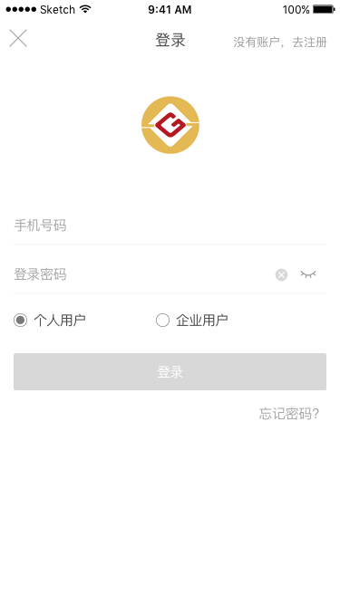
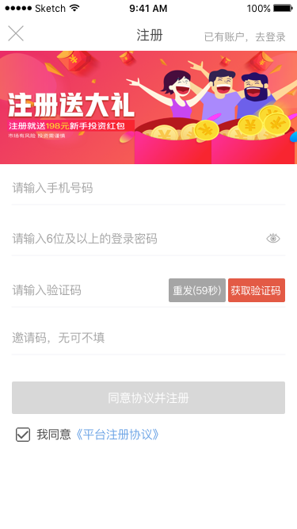

新手引导-登录/注册
页面1：登录
交互效果：向上弹出页面，点击向下收起页面
特殊说明：安卓设备返回键收起页面
关闭按钮：点击收起登录页面
注册按钮：点击翻转到注册页面，需要翻转效果
手机号码：
-提示文案“手机号码”
-数字键盘，只支持输入数字0-9，其他字符无法输入
-输入长度最多11位，超过11位后无法输入
登录密码：
-提示文案“登录密码”，输入框类型为密码类型
-可输入非中文的任意字符，键盘为“全键盘”
-输入长度最长50位，超过50位后无法输入
-显隐开关，默认隐藏状态（密码字符用“·”替代显示），点击切换到显示状态（密码字符明文显示）
登录按钮：
-可点击状态必须实时校验满足手机号码长度11位，登录密码长度6位及以上，其他均为不可点击状态
-校验1“手机号段符合范围01、13、14、15、16、17、18、19”，不符合Toast提示“请输入正确的手机号码”
-校验2“手机号码未注册”，未注册则Dialogs提示“该手机号未注册（按钮：我知道了、去注册）”
-校验3“密码是否正确”，不正确DIalogs提示“账户或密码错误，请重新输入（按钮：忘记密码、重新输入，点击重新输入，清空输入的密码，光标定位到登录密码输入框，同时弹出键盘）”
-校验层级：校验1>校验2>校验3
-密码连续输错5次，Dialogs提示“登录密码连续5次输入错误，账户锁定1小时（按钮：我知道了）”

页面2：注册
交互效果：向上弹出页面，点击向下收起页面
特殊说明：安卓设备返回键收起页面
关闭按钮：点击收起注册页面
登录按钮：点击翻转到登录页面，需要翻转效果
广告位：后台配置，未配置不显示，不需要跳转
手机号：
-提示文案“请输入手机号码”
-数字键盘，只支持输入数字0-9，其他字符无法输入
-输入长度最多11位，超过11位后无法输入
登录密码：
-提示文案“请输入6位及以上的登录密码”
-显隐开关，默认显示状态，点击切换到隐藏状态
-可输入任意字符，键盘为“全键盘”
-输入长度最长50位，超过50位后无法输入
验证码：
-提示文案“请输入验证码”
-只支持输入数字0-9，其他字符无法输入，数字键盘
-输入长度最长6位，超过6位后无法输入
-获取验证码，可点击状态必须满足手机号码长度为11位，其他状态均不可点击
-校验1“手机号段在规定范围内”，不符合Toast提示“请输入正确的手机号码”
-校验2“号码是否被注册”，被注册Dialogs提示“该手机号已被注册（按钮：我知道了、去登录）”
-校验层级：校验1>校验2
邀请码：
-提示文案“邀请码，无可不填”
-可输入任意字符，全键盘
注册按钮：
-可点击状态必须满足手机号码长度11位、登录密码长度6位及以上、验证码6位、协议已勾选，其他均为不可点击状态
-校验1“手机号段在规定范围内”，不符合Toast提示“请输入正确的手机号码”；
-校验2“号码是否被注册”，已被注册Dialogs提示“该手机号已被注册（按钮：我知道了、去登录）”；
-校验3“验证码正确”，不正确Toast提示“验证码不正确”；
-校验4“邀请码正确”，不正确Toast提示“邀请码为推荐人手机号或12位财富圈码”
-校验层级：校验1>校验2>校验3>校验4
协议：
-默认勾选，可点击取消。点击《投资协议》可查看协议内容
注册成功：
-注册成功，需要返回原页面，并在原页面弹窗注册成功，弹窗详见“弹窗定义”
登录/注册页面整体定义：
1、若处于登录状态（包括无网络登录），用户退出登录状态回到登录页面，此时收起登录/注册页面需要回到首页
2、若处于未登录状态，访问页面或使用功能调起登录/注册页面时，收起登录/注册页面需要回到之前页面
3、弹出键盘时，需要页面向上滑，在满足输入框不被顶部遮挡情况下，露出按钮最为合适
